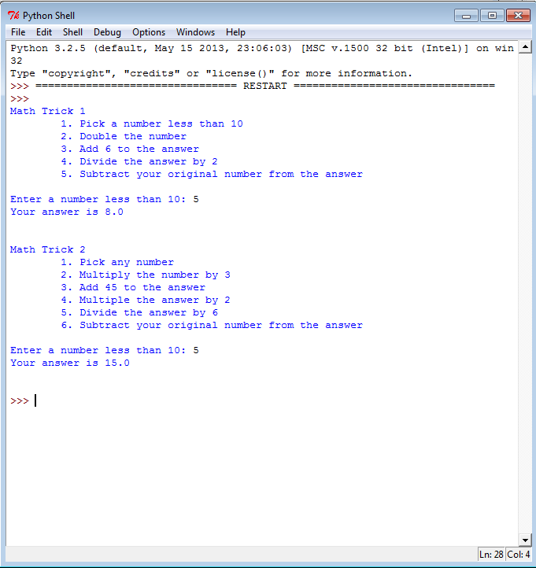
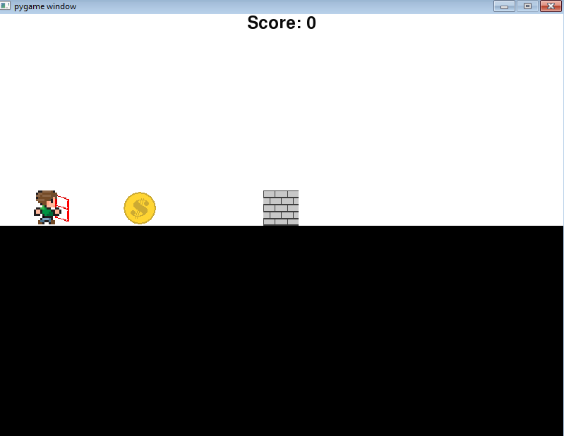
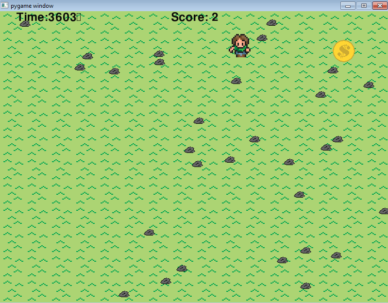
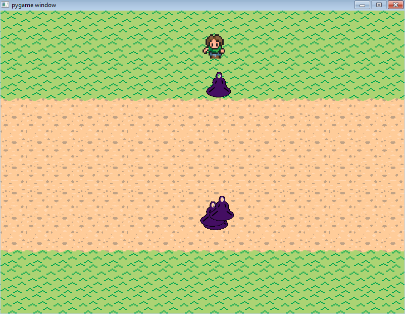
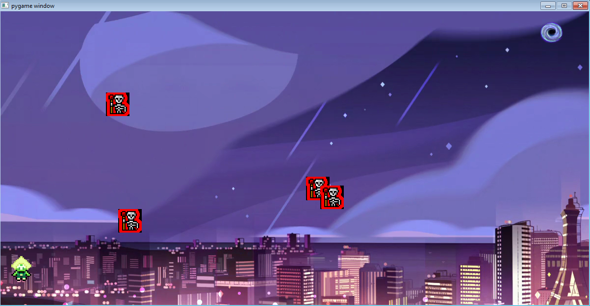

Python Unit 1
Concepts learned: basic inputs, number calculations, print, class and runner files

The Math Runner allows you to input a number and run it through a series of calculations and derive a new number.
Python Unit 2
Concepts learned: If statements, moving objects, score variable, collide.

The Lab Runner allows you to control an object (guy in this case) and jump over walls. Colliding with coins gives you one point, and colliding with fences deducts one point.
Python Unit 3
Concepts learned: Loops, while loops, ifs and elses, timer, text on screen.

The Ground Runner requires the user to control guy and collect coints to addd points to the score in a given amount of time.
Python Unit 4
Concepts learned: Lists, as in changing costume and creating multiple characters that follow a single set of control.

The Dodge Runner lets the user control guy to move from one side of the screen to another while avoiding enemies. If guy collides with an enemy, the guy will loose; enemies are controlled using list.
Python Final Project

The final project consists of a start page, levels, and an end page. The game part lets the user control a character, Peri, to the hole on the other side of the screen while avoiding enemies.